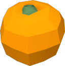
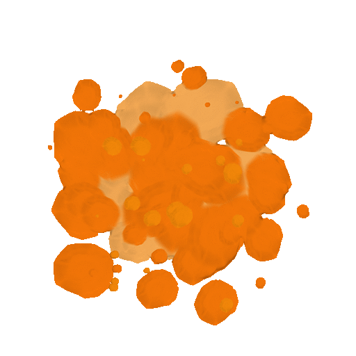

Fruit Ninja¶
Tym razem stworzymy gr typu Fruit Ninja. Cel gry jest prosty. Z brzegu ekranu bd wyskakiwa owoce, a naszym zadaniem bdzie je zapa, zanim spadn.
Gr, ktr bdziemy tworzy, moemy zobaczy poniej.
To¶
Zacznijmy od dodania ta do naszej gry. Proponuj jasne to, np. niebo.
Grafika¶
Klikamy na plusik koo Sprites w menu z lewej strony ekranu i szukamy grafiki o nazwie Sky Background, jak pokazano poniej. Wybieramy j i zatwierdzamy przyciskiem Select Asset. Nastpnie podajemy nazw naszej nowej grafiki: background i zatwierdzamy przyciskiem OK.

Klasa¶
Jak ju mamy grafik, to czas utworzy klas do reprezentacji ta. W tym celu klikamy na plusik przy Classes i dodajemy klas o nazwie Bg.
Wewntrz klasy, w czci inicjalizacyjnej (zakadka Start), musimy przypisa grafik do obiektu naszej nowej klasy. W tym celu odwoamy si do zmiennej sprite wewntrz naszego obiektu (self) i przypiszemy do niej nowy sprite utworzony za pomoc funkcji sprite. Do funkcji przekaemy jeden parametr: nazw naszej grafiki.
Gra¶
Teraz czas doda nasze nowe to do gry. W tym celu przechodzimy do klasy Game. Wewntrz utworzymy nowy obiekt klasy Bg i przypiszemy go do zmiennej bg w naszej grze.
Wszystko to robimy w czci inicjalizacyjnej, czyli zakadce Start.
Po uruchomieniu gry powinnimy ju zobaczy nasze nowe to na ekranie. wietna robota!
Owoce¶
To dodaje naszej grze charakteru, ale to owoce bd odgryway gwn rol, dlatego teraz si nimi zajmiemy.
Grafika¶
Zaczynamy standardowo od grafiki. Klikamy na plusik przy Sprites i szukamy grafiki pomaraczy (orange), takiej jak poniej. Dodajemy j i nazywamy orange.

Klasa¶
Nasze owoce potrzebuj klasy, bymy mogli z nimi pracowa. Poniewa wystarczy nam jedna klasa do reprezentacji wielu owocw, nazwiemy j Fruit. Klikamy na plusik przy Classes i dodajemy klas Fruit.
Wewntrz klasy, w czci inicjalizacyjnej (zakadka Start), zaczniemy od przypisania grafiki do obiektu owoca. Pocztkowo zaczniemy od jednej grafiki, ale pniej bdziemy wybiera losowo z wikszego zestawu. Podobnie jak w przypadku ta przypisujemy do zmiennej sprite w obiekcie klasy (self) now grafik utworzon za pomoc funkcji sprite. Do funkcji przekazujemy nazw grafiki.
Gra¶
Teraz czas doda nasz nowy owoc do gry. W tym celu przechodzimy do klasy Game. Pocztkowo, tylko dla testw, utworzymy nowy obiekt klasy Fruit. Zrobimy to w czci inicjalizujcej (zakadka Start). Nie musimy przypisywa naszego nowego obiektu do adnej zmiennej, nie bdziemy si do niej odwoywa z poziomu obiektu gry.
Nowy owoc tworzymy zaraz pod linijk tworzc to, na kocu kodu.
Po uruchomieniu gry powinnimy zobaczy na ekranie jedn, statyczn pomaraczk.
Ruch¶
Nasz owoc jest do statyczny. Nawet bardzo statyczny. Dodajmy troch dynamizmu do naszej gry. Do tego potrzebna nam bdzie prdko. Poniewa nasze owoce bd si porusza zarwno w poziomie (\(x\)) jak i w pionie (\(y\)) to bdziemy potrzebowa dwch zmiennych prdkoci. Nazwiemy je velocityX oraz velocityY.
Utworzymy te dwie zmienne w klasie Fruit w czci inicjalizacyjnej (zakadka Start). Poniewa bdziemy si do nich odwoywa aktualizujc pozycj owoca na ekranie, przypiszemy je do obiektu klasy owoca (self). Nowe zmienne dopisujemy na dole kodu. Pocztkowo nadamy im wartoci \(0\).
Mamy prdko, ale brakuje nam ruchu. Prdko powinna oddziaywa na pozycj owoca na ekranie. Aktualizacj pozycji bdziemy wykonywa w kadej klatce animacji. W tym celu przechodzimy do czci aktualizacyjnej w kodzie klasy owoca (zakadka Loop).
Na pocztku pustego kodu dopiszemy dwie linijki dodajce wartoci prdkoci do wsprzdnych obiektu na ekranie. Wsprzdne zapisane s w zmiennych w obiekcie klasy o nazwach x oraz y.
Teraz nasze owoce bd si porusza. Albo i nie bd. Po uruchomieniu gry zobaczymy, e nasza pomaracza wci jest statyczna. Dlaczego? Wyjanienie jest proste. Ustalilimy obie prdkoci na wartoci \(0\). W zwizku z tym owoc wci wisi w jednym miejscu na ekranie. Dla testw sprbuj przypisa jakie wartoci liczbowe do naszych prdkoci. Sprawd jak rne liczby wpywaj na ruch pomaraczy. Na koniec przywr wartoci \(0\), jeszcze nam si przydadz.
Grawitacja¶
Nasze owoce maj z zaoenia by wystrzeliwane a potem spada powoli w d ekranu. Zaczniemy od czci zwizanej ze spadaniem. Mona powiedzie, e zasymulujemy dziaanie grawitacji. Grawitacja bdzie wpywa na pooenie owoca na ekranie, ale porednio. Bezporednio bdzie wpywa na jego prdko pionow (\(y\)). W kadej klatce animacji prdko pionowa owocu bdzie zmniejszana o warto siy grawitacji.
Zmiana jest prosta. W klasie owocu (Fruit) w czci aktualizacyjnej (zakadka Loop) dopisujemy na koniec kodu jedn linijk:
Po uruchomieniu gry nasz owoc powinien zacz spada. Poeksperymentuj z rnymi wartociami siy grawitacji. Wybierz tak, ktra Tobie odpowiada.
Mamy grawitacj, wietnie. Ale co, jeeli pniej bdziemy chcieli j zmieni? Musielibymy pamita, gdzie j zapisalimy. A co jeeli chcielibymy doda do gry innego typu elementy, na ktre take bdzie oddziaywa grawitacja? Musielibymy wwczas dokonywa zmian w kilku miejscach w kodzie. Nie jest to najlepsza praktyka. Dlatego nasz warto grawitacji przypiszemy do obiektu gry. Przechodzimy do czci inicjalizujcej w klasie Game i na koniec dopisujemy:
Teraz nasza warto grawitacji jest dostpna w caej grze. Wszystkie elementy, ktre bd oddziaywa z grawitacj, bd mogy uywa tej wartoci. eby tak byo, wracamy do owocw (klasa Fruit). Przechodzimy do czci aktualizujcej i zmieniamy linijk, w ktrej stosujemy si grawitacji do prdkoci owoca:
Teraz nasze owoce bd spada zgodnie z wartoci grawitacji zdefiniowan dla caej gry. Jak bdziemy chcieli zmieni grawitacj, zmienimy j w kodzie klasy Game.
Wystrzeliwanie¶
Nasz owoc ju spada, to teraz czas, by by take wystrzeliwany. Jak uzyska taki efekt? To stosunkowo proste. Wystarczy, e nadamy owocowi odpowiedni pocztkow prdko. Chcielibymy, by nasze owoce poruszay si na rne sposoby, dlatego skorzystamy z losowoci.
Bdziemy potrzebowa funkcji randint z moduu random, ktra pozwoli nam losowa wartoci cakowite z zadanego przedziau. Aby mc korzysta z tej funkcji musimy jnajpierw zaimportowa. Przechodzimy do czci inicjalizujcej (zakadka Start) w klasie Fruit i na samym pocztku kodu, przed wszystkimi innymi instrukcjami, dopisujemy:
Teraz moemy przej do losowania pocztkowej prdkoci owocw. W klasie Fruit w czci inicjalizujcej (zakadka Start) Modyfikujemy dwie linijki, w ktrych przypisywalimy do zmiennych okrelajcych prdko wartoci \(0\). Teraz przypiszemy do nich losowe wartoci z wybranego przedziau.
W moich eksperymentach takie przedziay daj najlepsze efekty, ale zachcam do ekperymentowania i poszukania wasnego rozwizania.
Jak teraz uruchomimy gr, to zobaczymy pomaracz wystrzeliwujc ze rodka ekranu w losowym kierunku w prawo i do gry. Warto gr uruchomi kilkukrotnie by zobaczy dziaanie naszej losowoci. Dla lepszego jednak efektu zmienimy pocztkowe pooenie owoca tak, by by wystrzeliwany z poza brzegu ekranu. W tym celu wybierzemy odpowiednio nisk pozycj pionow (\(y\)), np. \(-400\), oraz losow, pooon z lewej strony, pozycj poziom (\(y\)), np. z przedziau \(<-600, -200>\). W ten sposb uzyskamy efekt wystrzeliwania owocw z lewej strony ekranu.
Do czci inicjalizujcej (zakadka Start) w klasie Fruit dopisujemy na kocu kodu:
Teraz nasze owoce bd wystrzeliwane z lewej strony ekranu.
Wiele owocw¶
Do tej pory mamy w grze tylko jedn pomaracz. To troch za mao na penoprawn rozgrywk. W naszej grze owoce powinny pojawia si losowo. Tym si teraz zajmiemy. Poniewa owoce bdziemy dodawa z poziomu gry, przechodzimy do klasy Game.
W czci inicjalizujcej usuwamy linijk tworzc owoc (Fruit()). Nie bdzie ju nam potrzebna, suya tylko do testw.
Owoce bdziemy dodawa losowo w trakcie trwania rozgrywki, dlatego przechodzimy do czci aktualizujcej (zakadka Loop). Potrzebna nam bdzie losowo, wic na grze kodu importujemy odpowiedni funkcj. Tym razem skorzystamy z losowych liczb rzeczywistych, ktre uzyskamy za pomoc funkcji random:
Jak wida, funkcja nazywa si tak samo jak biblioteka. Skorzystamy z wartoci losowych zwracanych przez funkcj random aby zadecydowa, czy doda nowy owoc do gry w danej klatce animacji. Funkcja random zwraca liczb rzeczywist z przedziau \(<0, 1)\).
Zaoenie jest proste: w kadej klatce animacji losujemy liczb rzeczywist. Jeli warto tej liczby jest mniejsza ni jaka maa warto, np. \(0.02\), to dodajemy nowy owoc do gry.
W klasie Game w czci aktualizacyjnej (zakadka Loop) dopisujemy na kocu kodu:
Podobnie jak wczeniej, nie musimy zapisywa nowych owocw do zmiennej. Wystarczy, e bdziemy je tworzy.
Teraz warto uruchomi gr i zobaczy, jak nowe owoce pojawiaj si na ekranie. Warto dostosowa warto w naszym warunku tak, by odpowiadaa naszym oczekiwaniu. Im wiksza warto, tym owoce bd si czciej pojawia. A im mniejsza, tym rzadziej bd si pojawia.
Warto pamita, e nie jest to najlepszy sposb na losowe dodawanie nowych elementw do gry, ale jest bardzo prosty i na tym poprzestaniemy.
Obracanie¶
Wiele owocw latajcych po ekranie to adny widok. Wci s one jednak do statyczne. Owoc leccy w powietrzu zazwyczaj si w jaki sposb obraca. Moemy to z atwoci zasymulowa.
W klasie Fruit w czci aktualizujcej (zakadka Loop), bdziemy zmienia obrt owocu (self.angle) o jak niewielk warto. Aby owoc obraca si zgodnie z ruchem wskazwek zegara, bdziemy zmniejsza zwarto zmiennej angle. Dopisujemy na kocu kodu:
Teraz nasze owoce bd obraca si w trakcie swojej podry.
Usuwanie owocw¶
Gdy nasze owoce wypadn poza ekran, to ju ich wicej nie zobaczymy. To nie oznacza jednak, e nie ma ich w grze! Bd sobie spada i spada w d, w nieskoczono. Przy duszej rozgrywce moe to okaza si problematyczne, poniewa komputer wci bdzie musia wylicza i aktualizowa ich pozycj, chocia nawet nie bdziemy ich ju widzie. Dlatego warto posprzta po sobie. Gdy owoc wypadnie poza ekran gry, to go skasujemy.
Przechodzimy do klasy Fruit. W czci aktualizacyjnej (zakadka Loop) sprawdzimy, czy pozycja pionowa (\(y\)) owocu jest odpowiednio maa, np. mniejsza ni \(-500\). Jeeli tak, to usuniemy owoc z gry za pomoc funkcji destroy do ktrej przekazujemy jeden parametr: obiekt z gry do usunici. W naszym przypadku bdzie to obecny owoc, czyli self. Dopisujemy wic na kocu kodu:
Teraz gdy nasze owoce wypadn poza ekran, to zostan skasowane. Nie zobaczymy tego bezporednio po uruchomieniu gry, ale jest to wany element caego procesu.
apanie owocw¶
C to za Fruit Ninja, w ktrym nie moemy apa naszych owocw. Teraz zajmiemy si dodaniem gwnej funkcjonalnoci w naszej grze.
Grafika¶
Owoce bdziemy apa za pomoc myszki. Niemniej przyda nam si grafika do reprezentowania naszej pozycji na ekranie. Skorzystamy z grafiki o nazwie slicer: maej biaej kropki. Klikamy na plusik przy Sprites w menu po lewej stronie, szukamy grafiki, dodajemy j i zapisujemy pod nazw slicer.
Klasa¶
Tak jak i wczeniej, potrzebujemy mie now klas. Klikamy plusik przy Classes i dodajemy klas o nazwie Slicer.
W naszej nowej klasie, w czci inicjalizujcej (zakadka Start), przypisujemy grafik do nowego obiektu, podobnie jak poprzednio:
Gra¶
Aby nasz slicer pojawi si w grze, musimy utworzy jego obiekt. Przechodzimy do klasy Game i w czci inicjalizacyjnej (zakadka Start) tworzymy nowy obiekt Slicer() i zapisujemy go w zmiennej w grze o nazwie slicer. Cao dopisujemy na kocu kodu.
Poruszanie¶
Naszym nowym elementem bdziemy sterowa za pomoc myszki. Jego pozycja powinna zawsze znajdowa si tam, gdzie sama myszka. W tym celu przechodzimy do klasy Slicer. W czci aktualizujcej (zakadka Loop) bdziemy przypisywa obecn pozycj myszki do pozycji obiektu. Wsprzdne myszki uzyskamy za pomoc funkcji mouse_x() oraz mouse_y(). Funkcje nie przyjmuj adnych parametrw.
Dopisujemy wic do naszego kodu dwie linijki:
Teraz nasz slicer bdzie tam, gdzie wskanik naszej myszy w trakcie gry.
apanie owocw¶
Gdy bdziemy trzyma lewy przycisk myszy i najedziemy kursorem na owoc, to ten powinien zosta uznany za zapany i w efekcie znikn z ekranu. T funkcjonalno zaimplementujemy w klasie Slicer w czci aktualizujcej.
Na pocztku sprawdzimy, czy wcinity jest lewy przycisk myszy. Do tego skorzystamy z funkcji mouse_is_pressed, ktra jako parametr przyjmuje nazw przycisku, ktry chcemy sprawdzi. Dopisujemy wic do naszego kodu, na kocu:
Teraz sprawdzimy, czy jestemy w kolizji z jakim owocem. Moemy to zrobi za pomoc funkcji get_collision, ktra zwrci nam obiekt, w ktrym jestemy w kolizji, lub warto pust, jeeli nie jestemy w kolizji. Do funkcji przekazujemy dwa elementy, ktrych kolizj chcemy zbada. Pierwszy to bdzie nasz obecny obiekt (self), a drugim bdzie nazwa klasy Fruit, poniewa chcemy sprawdzi, czy jestemy w kolizji z jakimkolwiek owocem.
Dopisujemy wic, wewntrz bloku naszej instrukcji warunkowej:
Teraz pozostao nam sprawdzi, czy jaki owoc zosta zwrcony.
Jeeli tak, to go usuniemy z gry za pomoc funkcji destroy.
Jeeli teraz przetestujemy gr, to powinnimy mc apa nasze owoce. wietnie!
Punkty¶
C to za gra bez punktw. W naszej grze bdziemy dostawa punkty za kady trafiony owoc, a traci, za kady ktry wypadnie poza ekran.
Tekst¶
Zaczniemy do dodania do naszej gry napisu wywietlajcego punkty na ekranie. W tym celu przechodzimy do klasy Game. W czci inicjalizujcej (zakadka Start) utworzymy nowy tekst za pomoc funkcji text i zapiszemy go w zmiennej w grze o nazwie points_text. Funkcja text przyjmuje trzy parametry: tekst do wywietlenia oraz jego wsprzdne na ekranie. Punkty umiecimy w lewym grnym rogu naszej gry. Dopisujemy wic na kocu kodu.
Teraz powinnimy ju zobaczy nasze punkty po uruchomieniu gry. Oczywicie nie bd si jeszcze zmienia.
Dla lepszego efektu zmienimy kolor dodanego tesktu, odwoujc si do wasnoci color w zmiennej points_text. Kolor moemy poda za pomoc angielskiej nazwy, albo w kodzie szesnastkowym.
Zmiemy take rozmiar tekstu. Powinien by odpowiednio duy i czytelny. To zrobimy odwoujc si do wasnoci fontSize.
Zliczanie¶
Mamy ju sposb na wywietlanie punktw, moemy przej do ich zliczania. Punkty bdziemy pamita w zmiennej points w klasie Game. Dopisujemy wic w czci inicjalizujcej:
Zmienimy take jego warto na ekranie. W tym celu zmienimy tekst, ktry wywietla nam punkty. Dopisujemy wic w czci aktualizujcej (zakadka Loop):
Teraz pozostao dodawa i odejmowa punkty. Przechodzimy wic najpierw do klasy Slicer. W czci aktualizujcej, gdzie wykrywamy kolizj z owocem i go usuwamy, dopiszemy zwikszanie liczby punktw. Dopisujemy, zaraz pod instrukcj destroy(fruit), zachowujc odpowiednie wcicie:
Podobnie zrobimy, gdy owoc zniknie poza ekranem. Przechodzimy do czci aktualizujcej w klasie Fruit. Zaraz pod instrukcj destroy(self), za pomoc ktrej usuwamy owoce, ktre wypady poza ekran, dopisujemy, zachowujc odpowiednie wcicie:
Cao powinna wyglda tak:
if mouse_is_pressed("left"):
fruit = get_collision(self, "Fruit")
if fruit:
destroy(fruit)
game.points -= 1
Teraz, gdy uruchomimy gr, powinnimy widzie, jak nasze punkty si zmieniaj. Moemy ju konkurowa z innymi o najlepszy wynik!
Animacja trafienia¶
Nasza gra bdzie wygldaa znacznie lepiej, gdy po trafieniu owoc efektownie si rozpadnie. W tym celu dodamy odpowiedni animacj.
Grafika¶
Zaczynamy od znalezienia odpowiedniej grafiki, a dokadniej animacji utworzonej z kilku grafik. Klikamy plusik przy Sprites i szukamy Orange Splash, jak pokazano piniej. Dodajemy i zapisujemy pod nazw orangesplash.

Klasa¶
Do wywietlania naszej animacji potrzebna nam bdzie nowa klasa. Klikamy plusik przy Classes i tworzymy klas o nazwie Splash. Wykorzystamy j do animacji take dla innych owocw, nie tylko pomaraczy.
Klasa bdzie bardzo prosta. Nie bdziemy w niej inicjalizowa samej animacji, zrobimy to z innego miejsca. Tutaj przechowamy wycznie licznik, ktry posuy nam do usunicia animacji po odpowiednim czasie. W czci inicjalizujcej dopisujemy wic zmienn do obiektu klasy. Nazwiemy j timer i przypiszemy pocztkow warto rwn \(16\). Bdzie to liczba klatek, po ktrej animacja zostanie usunita.
W czci aktualizujcej bdziemy zmniejsza ten licznik, a gdy dojdzie do zera, to usuniemy nasz obiekt animacji. eby uniezaleni si od liczby klatek na sekund, bdziemy odejmowa w kadej klatce nie warto \(1\), ale warto \(60\) podzielon przez aktualn liczb klatek na sekund. Dlaczego \(60\)? W takiej liczbie klatek powinna dziaa nasza gra. Liczb klatek na sekund otrzymamy za pomoc funkcji get_fps(). Dopisujemy wic w czci aktualizujcej (zakadka Loop):
Teraz, gdy licznik osignie warto \(0\), usuniemy nasz obiekt animacji.
Przygotowanie animacji¶
Teraz czas wczyta grafiki i utworzy z nich animacj. Bdziemy j przechowywa w klasie Fruit. Jest to wane z tego wzgldu, e gdy bdziemy mieli rne owoce, to trzeba do nich dopasowa take animacje. Przechodzimy wic do klasy Fruit i czci inicjalizacyjnej (zakadka Start).
Najpierw utworzymy zmienn, w ktrej przechowamy grafiki animacji. Bdzie to zwyka, lokalna zmienna, ktr nazwiemy splash. Przypiszemy do niej wczytan grafik korzystajc z funkcji sprite, do ktrej przekaemy trzy parametry: nazw pliku grafiki, liczb wierszy oraz liczb kolumn. Gdy otworzymy nasz zaadowan wczeniej grafik orangesplash.png, to zobaczymy, e skada si ona z kilku obrazkw: kolejnych klatek animacji. S one uoone w dwa wiersze i cztery kolumny. Dopisujemy wic na koniec kodu:
Teraz moemy na podstawie zaadowanej grafiki utworzy waciw animacj. Utworzymy zmienn przypisan ju do obiektu naszego owoca, poniewa bdzie nam pniej potrzebna w innym miejscu. Zmienn nazwiemy splash_animation. Przypiszemy do niej wynik dziaania funkcji animation, do ktrej przekaemy cztery parametry: zaadowan grafik (splash), liczb klatek na sekund do wywietlenia animacji (\(16\)), indeks pocztkowej klatki z zaadowanych grafik (\(0\)), indeks kocowej klatki z zaadowanych grafik (\(7\)). Animacj wywietlimy w szesnastu klatkach na sekund, poniewa jest krtka i nie chcemy, by tylko migna, ale bya dobrze widoczna. Jak mona zauway, klatki indeksujemy od zera. Dopisujemy wic na koniec kodu:
Uruchomienie animacji¶
Teraz, jak ju mamy wszystko przygotowane, czas przej do uruchomienia animacji w odpowiednim momencie. Chcemy to zrobi wtedy, gdy zapiemy owoc na ekranie. Za apanie owocw odpowiada Slicer, do niego wic przechodzimy. Otwieramy zakadk z kodem aktualizacyjnym (Loop) i szukamy miejsca, w ktrym usuwamy zapany owoc. Fragment kodu, ktry nas interesuje, powinien wyglda mniej wicej tak:
if mouse_is_pressed("left"):
fruit = get_collision(self, "Fruit")
if fruit:
destroy(fruit)
game.points += 1
Teraz, przed instrukcj usuwajc owoc, utworzymy now animacj i zapiszemy j w zmiennej lokalnej splash.
if mouse_is_pressed("left"):
fruit = get_collision(self, "Fruit")
if fruit:
splash = Splash()
destroy(fruit)
game.points += 1
Po utworzeniu zmiennej splash musimy przypisa do niej zaadowan wczeniej animacj ze zmiennej fruit. To utworzymy korzystajc z funkcji set_animation do ktrej podajemy dwa parametry: obiekt, do ktrego chcemy przypisa animacj (splash), oraz animacj, ktr chcemy przypisa (fruit.splash_animation):
if mouse_is_pressed("left"):
fruit = get_collision(self, "Fruit")
if fruit:
splash = Splash()
set_animation(splash, fruit.splash_animation)
destroy(fruit)
game.points += 1
Gdy teraz uruchomimy gr i zapiemy owoc to zobaczymy, e animacja si tworzy, ale nie we waciwym miejscu, tylko na rodku ekranu. Oznacza to, e musimy jeszcze do zmiennej splash przypisa odpowiednie wsprzdne. Poniewa chcemy, by animacja pojawia si w miejscu, w ktrym znajduje si owoc, przepiszemy wsprzdne ze zmiennej fruit:
if mouse_is_pressed("left"):
fruit = get_collision(self, "Fruit")
if fruit:
splash = Splash()
set_animation(splash, fruit.splash_animation)
splash.x = fruit.x
splash.y = fruit.y
destroy(fruit)
game.points += 1
Teraz ju jest duo lepiej, ale animacja bdzie do dua w stosunku do rozmiaru owoca. Moemy to zmieni modyfikujc jej skal. Zmienimy wartoci dwch zmiennych: splash.scaleX oraz splash.scaleY. S to odpowiednio wartoci skali w poziomie i w pionie. Przypiszemy do nich poow odpowiednich wartoci skali ze zmiennej fruit:
if mouse_is_pressed("left"):
fruit = get_collision(self, "Fruit")
if fruit:
splash = Splash()
set_animation(splash, fruit.splash_animation)
splash.x = fruit.x
splash.y = fruit.y
splash.scaleX = fruit.scaleX/2
splash.scaleY = fruit.scaleY/2
destroy(fruit)
game.points += 1
Teraz animacja jest ju gotowa.
Czas i koniec gry¶
Nasza gra powinna si kiedy zakoczy, nie tylko wtedy, gdy si ni znudzimy. Dodamy licznik czasu, po ktrego upyniciu gra si zakoczy.
Czas¶
Wywietlanie i zliczanie czasu zrobimy z poziomu klasy Game. Najpierw zaczniemy od zapamitania czasu, ktry nam pozosta. W czci inicjalizujcej (zakadka Start) tworzymy now zmienn przypisan do obiektu gry. Nazwiemy j time i ustawimy jej pocztkow warto na \(61\). W ten sposb bdziemy mieli \(60\) sekund na rozgrywk. Dlaczego wic ustawiamy \(61\) a nie \(60\)? Poniewa ta jedna sekunda zdy upyn, zanim gra waciwie wystartuje. Dodajemy now zmienn na kocu kodu.
Teraz czas wywietli czas na ekranie. Do tego utworzymy kolejn zmienn zapisan w obiekcie gry, tym razem o nazwie time_text. Przypiszemy do niej tekst utworzony za pomoc funkcji text, podobnie jak zrobilimy z punktami. Licznik czasu umiecimy w prawym grnym rogu. Nadamy mu take odpowiedni kolor (color) i rozmiar (fontSize).
self.time = 61
self.time_text = text(self.time, 500, 350)
self.time_text.color = "#0E1428"
self.time_text.fontSize = 80
Po uruchomieniu powinnimy ju widzie czas w prawym grnym rogu ekranu gry. Oczywicie nie bdzie si jeszcze zmienia. Tym si teraz zajmiemy. Przechodzimy do czci aktualizujcej (zakadka Loop). Na koniec kodu dopiszemy instrukcj zmniejszajc nasz zmienn time o liczb sekund, ktre upyny od ostatniej klatki animacji. W tym celu musimy znowu skorzysta z funkcji get_fps(). Najpierw dzielimy \(60\) przez liczb klatek, a nastpnie wynik znowy dzielimy na \(60\), by uzyska sekudny. Cao odejmujemy od zmiennej time.
Moemy to take uproci, skracajc:
Teraz pozostao nam zaktualizowa wywietlany czas. Poniewa czas bdzie teraz liczb rzeczywist, a my chcemy wywietla tylko pene sekundy, to musimy go zamieni na liczb cakowit za pomoc funkcji int przypisujc go do tekstu.
Teraz powinnimy widzie zmieniajcy si czas na ekranie.
Koniec gry¶
Gdy licznik czasu dobiegnie koca gra powinna si zatrzyma. Do tego bdziemy potrzebowali jednej dodatkowej zmiennej do pamitania, czy gra si ju zakoczya. Dodamy now zmienn do naszego obiektu gry. Nazwiemy j game_over i przypiszemy jej pocztkow warto False. Now zmienn dopisujemy na kocu w czci inicjalizujcej (zakadka Start).
Teraz musimy zmieni nasz kod, aby sprawdza, czy gra si zakoczya. Wracamy do zakadki Loop. Najpierw, na samym pocztku kodu, sprawdzimy, czy gra si ju zakoczya. Jeeli tak, to uyjemy instrukcji return by nie wykonywa ju adnych wicej operacji.
Teraz czas zakoczy gr, gdy licznik czasu spadnie do zera. W tym celu wracamy do miejsca, gdzie aktualizowalimy nasz czas.
Pomidzy te dwie linijki kodu dodamy instrukcj sprawdzajc, czy czas spad poniej zera. Tak bdzie atwiej, ni sprawdza czy czas wynosi rwne zero, poniewa pracujemy na liczbach rzeczywistych.
Jeeli tak si wydarzy, to zrobimy dwie rzeczy: zapamitamy, e gra si zakoczya zmieniajc warto zmiennej game_over na True i ustawimy czas na \(0\), aby nie wywietla ujemnych wartoci.
self.time -= (60/get_fps()) / 60
if self.time < 0:
self.game_over = True
self.time = 0
self.time_text.text = int(self.time)
Teraz gra powinna si koczy wraz z upywem czasu.
Napis koca gry¶
Warto poinformowa gracza stosownym komunikatem, e gra si zakoczya. W tym celu utworzymy napis GAME OVER, ktry wywietli si na rodku ekranu po zakoczeniu gry. Napis pocztkowo powinien by niewidoczny, dlatego ustawimy jego wasno visible na False. Poza tym wyrwnamy go take w poziomie (halign) oraz w pionie (valign). Wszystko zapiszemy w zmiennej game_over_text w obiekcie gry. Dopisujemy nowy fragment na kocu czci inicjalizujcej (zakadka Start).
self.game_over_text = text("GAME OVER", 0, 0)
self.game_over_text.color = "#FF4365"
self.game_over_text.fontSize = 120
self.game_over_text.halign = "center"
self.game_over_text.valign = "middle"
self.game_over_text.visible = False
Tekst powinnimy wywietli, jak gra si zakoczy. Przechodzimy wic do zakadki Loop i szukamy fragmentu, w ktrym ustawiamy warto zmiennej game_over na True.
Pod spodem, wewntrz instrukcji warunkowej, zmieniamy widoczno tekstu koca gry.
Teraz powinnimy zobaczy napis GAME OVER na ekranie po zakoczeniu gry.
Restart¶
Gr moemy restartowa rcznie, uruchamiajc j ponownie, ale dobrze byoby mc to take zrobi z poziomu gry. Dlatego dodamy moliwo restartu gry po jej zakoczeniu, gdy gracz wcinie prawy przycisk myszy. Dlaczego prawy? Poniewa lewy jest uywany w rozgrywce.
Przechodzimy do zakadki Loop w klasie Game. Na samym pocztku kodu mamy instrukcj, ktra sprawdza, czy gra si zakoczya.
Wewntrz tej instrukcji, przed wykonaniem return, sprawdzimy, czy nacinity zosta prawy przycisk myszy.
Jeeli tak jest, to ustawimy warto game_over na False, ukryjemy tekst koca gry, wyzerujemy punkty oraz przywrcimy pocztkow warto licznika czasu.
if self.game_over:
if mouse_is_pressed("right"):
self.time = 61
self.points = 0
self.game_over_text.visible = False
self.game_over = False
return
Teraz powinnimy mc ponownie uruchomi rozgrywk po jej zakoczeniu za pomoc prawego przycisku myszy.
Rnorodne owoce¶
Czas urozmaici nasz gr dodajc do niej nowe owoce. Bdzie to zmiana wycznie wizualna.
Grafiki¶
Zaczynamy od zaadowania odpowiednich grafik, zarwno owocw jak i efektw animacji. Klikamy wic na plusik przy Sprites i dodajemy:
- Apple - nazywamy apple
- Apple Splash - nazywamy applesplash
- Watermelon - nazywamy watermelon
- Watermelon Splash - nazywamy watermelonsplash
- Eggplant - nazywamy eggplant
- Eggplant Splash - nazywamy eggplantsplash
- Pear - nazywamy pear
- Pear Splash - nazywamy pearsplash
Jak ju mamy dodane grafiki, to czas je zaadowa. W tym celu przechodzimy do klasy Fruit. W kodzie inicjalizujcym (zakadka Start) utworzymy dwie listy zawierajce nazwy grafik oraz odpowiadajcych im animacji. Bd to zmienne lokalne, nazwane odpowiednio images oraz splash_images. Dodajemy na pocztku kodu, zaraz pod importowaniem biblioteki random:
images = ["orange.png", "apple.png", "watermelon.png", "pear.png", "eggplant.png"]
splash_images = ["orangesplash.png", "applesplash.png", "watermelonsplash.png", "pearsplash.png", "eggplantsplash.png"]
Kolejno elementw na listach ma znaczenie, poniewa owoc i jego animacja musz znajdowa si na odpowiadajcych sobie pozycjach w listach.
Losowanie¶
Teraz moemy przej do losowania grafiki. W tym celu wylosujemy numer elementu z listy. Zaraz pod utworzonymi listami tworzymy now zmienn lokaln image_num do ktrej przypiszemy losow warto uzyskan za pomoc funkcji randint. Bdziemy losowa od zera do dugoci listy minus jeden, poniewa tak numerowane s elementy na licie. Dugo listy pobierzemy za pomoc funkcji len.
Teraz moemy wykorzysta warto zmiennej image_num do wyboru odpowiedniego obrazka z listy images. Szukamy miejsca w kodzie, gdzie ustalalimy warto zmiennej sprite:
Zamiast grafiki orange.png odwoamy si do elementu z listy images pod wylosowanym indeksem:
Podobnie zrobimy z animacj. Szukamy instrukcji ustawiajcej warto zmiennej splash:
Zmieniamy grafik na element listy splash_images pod wylosowanym indeksem:
I to wszystko! Powinnimy ju mie losowe owoce.
lad¶
Jednym z ciekawych wizualnych efektw jest zostawienie za sob ladu, gdy poruszamy myszk i mamy wcinity lewy przycisk. Teraz tym si zajmiemy.
Klasa¶
Najpierw utworzymy now klas Trail. Klikamy wic na plusik przy Classes i podajemy odpowiedni nazw.
Wewntrz klasy, w czci inicjalizujcej (zakadka Start) zaadujemy najpierw grafik, tak sam jak do naszego slicera:
Utworzymy take zmienn timer przypisan do obiektu i nadamy jej pocztkow warto \(5\), tak by lad znika po piciu klatkach.
Dodawanie ladu¶
lad bdziemy dodawa z poziomu klasy Slicer, przechodzimy wic do niej. W czci inicjalizujcej (zakadka Start) utworzymy zmienn trail_length przypisan do obiektu, ktra bdzie okrelaa nie tyle dugo pozostawianego ladu, co jego dokadno. Bdzie okrelaa, ile kropek ma by postawionych pomidzy obecn a ostatnio zapamitan pozycj myszki. Dopisujemy na kocu kodu:
Teraz moemy przej do czci aktualizujcej (zakadka Loop) klasy Slicer. Na samym pocztku kodu, przed zmian wsprzdnych, zapamitamy obecne pooenie w dwch zmiennych lokalnych:
Po zmianie wsprzdnych natomiast wyliczymy prdko z jak poruszya si myszka, odejmujc od jej obecnego pooenia jej poprzednie pooenie. Wyniki zapamitamy take w zmiennych lokalnych.
previousX = self.x
previousY = self.y
self.x = mouse_x()
self.y = mouse_y()
speedX = self.x - previousX
speedY = self.y - previousY
Teraz moemy przej do faktycznego dodawania ladu. Szukamy miejsca, w ktrym sprawdzamy, czy lewy przycisk myszy jest kliknity:
Wewntrz instrukcji warunkowej, na samym pocztku, dopiszemy dodawanie ladu. lad bdziemy dodawa w ptli. Przejdziemy ptl tyle razy, ile wynosi dugo ladu, ktry chcemy zostawi:
W ptli bdziemy najpierw tworzy nowy lad (Trail()), ktry zapamitamy w lokalnej zmiennej trail:
Teraz pozostao nam ustali pozycj nowego ladu. Bdzie ona zalena od poprzedniej pozycji myszy, prdkoci myszy, dugoci ladu i numeru elementu ladu ktry wanie dodajemy (licznik ptli):
if mouse_is_pressed("left"):
for i in range(self.trail_length):
trail = Trail()
trail.x = previousX + speedX * i / self.trail_length
trail.y = previousY + speedY * i / self.trail_length
...
Teraz moemy uruchomi gr i zobaczy, jak lad si pojawia, ale nie znika.
Znikanie ladu¶
Wracamy do klasy Trail i przechodzimy do czci aktualizacyjnej (zakadka Loop). Tutaj bdziemy zmniejsza licznik (timer) o warto upynitych klatek animacji:
Nastpnie, dla lepszego efektu, bdziemy zmniejsza rozmiar (skal) ladu o wybrany procent:
Na koniec, gdy licznik spadnie do zera, usuniemy fragment ladu z gry:
self.timer -= 60 / get_fps()
self.scaleX *= 0.9
self.scaleY *= 0.9
if self.timer <= 0:
destroy(self)
I to tyle! lad powinien teraz adnie pojawia si i znika po czasie.
Skoczona gra¶
Peen kod gry mona znale pod adresem https://pixelpad.io/app/pcsoedfirjh/?edit=1.